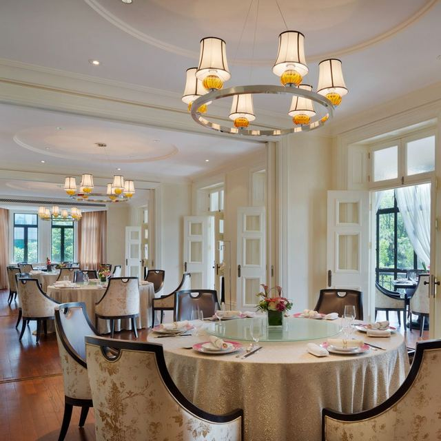

Cantonese, in a 1920s villa · Huangpu
Xin Yuan Lou (Ruijin Guesthouse villa) 馨源楼
The Michelin Guide places it in a 1920s villa at Building 4 of the InterContinental Ruijin, in the Ruijin Guesthouse garden grounds.
CNY 344per person
LikelyAmap count missingAmap (opens Amap, or its website, in a new tab)